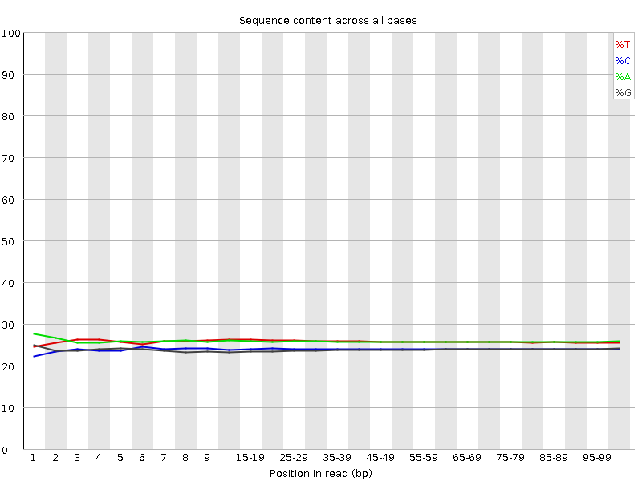
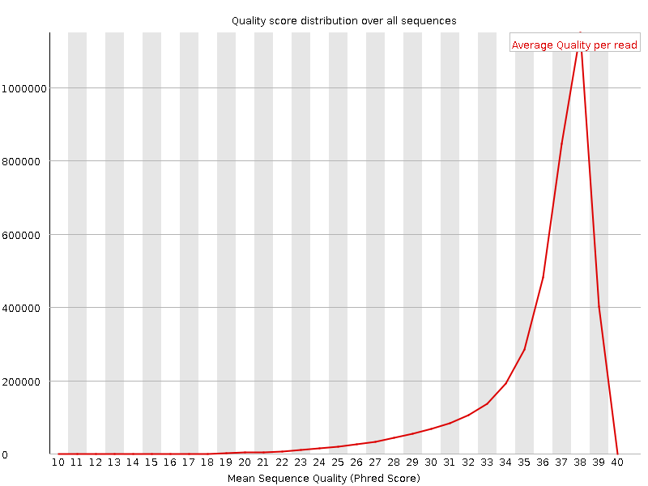
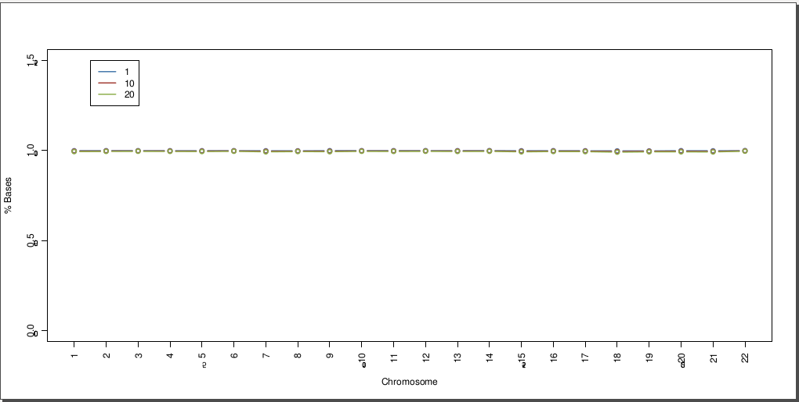

SSGG Bionformatics exome report results - α
Table of contents
1 - Introduction
The rapid evolution of Next-Generation Sequencing platforms is transforming today’s medical research and diagnostics [1-8]. The new generation of sequencers is capable of generating millions of nucleotide reads in a unique sequencing process in a very short time. Currently, the combination of DNA capture enrichment systems and high-throughput sequencing techniques is the method of choice for genomic research in Mendelian disorders and is becoming more popular for genetic diagnostics purposes as the cost per base decreases.
The following report summarizes the results of the whole-exome resequencing of {{sample_list|length}} {% if sample_list|length > 1 %} samples, {% else %} sample, {% endif %} using the latest version of the {{ seq_platform }} {{ sequencer }}© sequencing platform and Agilent’s SureSelect Target Enrichment System for {{ size }}.
2 - Methods
2.1 - Sample preparation
‘Paired end’ reads 101nt length were generated. Then, targeted regions were enriched using the SureSelect All Human Enrichment Target Exon (Agilent’s) for {{ size }}.
2.2 - Data Analysis
2.2.1 - Raw data quality assessment
Similarly to Sanger sequencing, NGS platforms generate error probability values per base which are known as quality values. Quality values are provided in Phred-like scale [9,10] so that a value of 20 means that there is a probability of 1 out of 100 of that base being wrong. The global study of the quality values provides information about the sequencing quality.
Three different plots were generated for each sample’s read group (R1 and R2, similar to Sanger’s nomenclature “forward” and “reverse” to define reads obtained from the same DNA fragment):
- Per base sequence quality (Figure 1).
- Per base sequence content (Figure 2).
- Per sequence quality scores (Figure 3).
Figure 1. Quality base distribution across all read bases. Nucleotide quality in a certain position is displayed by bars. Blue line means the average while red line means the median.
Figure 2. Nucleotide content across all bases. The percentage of each nucleotide per position is displayed.
Figure 3. Quality score distribution over all sequences. The average quality read is displayed.
2.2.2 - Read alignment
Reads were aligned against the human reference genome version GRCh37/hg19. Read alignment was performed using BWA and ‘in-house’ scripts.
2.2.3 - Read alignment and target enrichment assessment
After read mapping, it is important to filter those sequences that can introduce major biases and noise in further steps. From the BAM formatted file obtained after reads mapping, low quality reads and sequences flagged as PCR duplicates were removed. In addition, the overall sample coverage and the efficiency of the combination of the selected strategy (target enrichment system + NGS platform) were evaluated at this point. Three different parameters were calculated for this purpose:
- Coverage distribution along targeted regions (Figure 4A).
- Percentage of target bases covered at 1x, 10x and 20x for each chromosome (Figure 4B).
- Percentage of reads on target against the total number of mapped reads.
Figure 4. A). Coverage distribution along targeted regions. The red line shows the cumulative base proportion. B) Percentage of target bases covered at 1x,10x and 20x in each chromosome.

Figure 4. B).Filtering processes were performed using Picard-tools (http://picard.sourceforge.net/) and SAMtools [11]. Coverage metrics and the evaluation of the target enrichment system were performed using custom scripts.
2.2.4 - Variant calling
Variant calling is the process in which variants are identified. Variant identification is performed using the information from read alignments, thus mismatches found between read and the reference genome are deeper studied to identify real variants.
Variant calling was performed using a combination of two different algorithms: VarScan [12] and GATK [13]. ‘In-house’ scripts were developed to combine and filter variants.
2.2.5 - Variant annotation
Identified variants were annotated using the Ensembl database [14]. This database contains information from the most relevant human variation resources such as dbSNP, the HapMap project, the 1000Genomes project, COSMIC and many others [http://www.ensembl.org].
Variants were classified attending to their position or effect on affected transcripts as follows (see Figure 5):
- splice_donor_variant: A splice variant that changes the 2 base region at the 5' end of an intron.
- splice_acceptor_variant: A splice variant that changes the 2 base region at the 3' end of an intron.
- stop_gained: A sequence variant whereby at least one base of a codon is changed, resulting in a premature stop codon, leading to a shortened transcript.
- frameshift_variant: A sequence variant which causes a disruption of the translational reading frame, because the number of nucleotides inserted or deleted is not a multiple of three.
- stop_lost: A sequence variant where at least one base of the terminator codon (stop) is changed, resulting in an elongated transcript.
- initiator_codon_variant: A codon variant that changes at least one base of the first codon of a transcript.
- inframe_insertion: An inframe non synonymous variant that inserts bases into in the coding sequence that are multiple of three.
- inframe_deletion: An inframe non synonymous variant that deletes bases from the coding sequence that are multiple of three.
- missense_variant: A sequence variant, that changes one or more bases, resulting in a different amino acid sequence but where the length is preserved.
- transcript_amplification: A feature amplification of a region containing a transcript.
- splice_region_variant: A sequence variant in which a change has occurred within the region of the splice site, either within 1-3 bases of the exon or 3-8 bases of the intron.
- incomplete_terminal_codon_variant: A sequence variant where at least one base of the final codon of an incompletely annotated transcript is changed.
- synonymous_variant: A sequence variant where there is no resulting change to the encoded amino acid.
- stop_retained_variant: A sequence variant where at least one base in the terminator codon is changed, but the terminator remains.
- coding_sequence_variant: A sequence variant that changes the coding sequence.
- mature_miRNA_variant: A transcript variant located with the sequence of the mature miRNA.
- 5_prime_UTR_variant: A UTR variant of the 5' UTR.
- 3_prime_UTR_variant: A UTR variant of the 3' UTR.
- intron_variant: A transcript variant occurring within an intron.
- NMD_transcript_variant: A variant in a transcript that is the target of NMD.
- non_coding_exon_variant: A sequence variant that changes non-coding exon sequence.
- nc_transcript_variant: A transcript variant of a non-coding RNA.
- upstream_gene_variant: A sequence variant located 5' of a gene.
- downstream_gene_variant: A sequence variant located 3' of a gene.
- TFBS_ablation: A feature ablation whereby the deleted region includes a transcription factor binding site.
- TFBS_amplification: A feature amplification of a region containing a transcription factor binding site.
- TF_binding_site_variant: A sequence variant located within a transcription factor binding site.
- regulatory_region_variant: A sequence variant located within a regulatory region.
- regulatory_region_ablation: A feature ablation whereby the deleted region includes a regulatory region.
- regulatory_region_amplification: A feature amplification of a region containing a regulatory region.
- feature_elongation: A sequence variant that causes the extension of a genomic feature, with regard to the reference sequence.
- feature_truncation: A sequence variant that causes the reduction of a genomic feature, with regard to the reference sequence.
- intergenic_variant: A sequence variant located in the intergenic region, between genes.
Figure 5. Variant classification according to their consequence or position on transcripts. The set of consequence terms, defined by the Sequence Ontology (http://www.sequenceontology.org)
3 - Results
3.1 - Results tree
Analysis results are provided as shown in the following results tree:
.
└── analysis
├── annotation
│ └── {analysis_name}_annotation.vcf
├── stats {% for sample_id in sample_list %} {% if loop.last %}
│ └── {{sample_id}} {% else %}
│ ├── {{sample_id}} {% endif %} {% endfor %}
└── variants
└── {analysis_name}_collect.vcf
Further information on the results of each analysis step can be found in subsequent sections.
3.2 - Raw data quality assessment
Table 1 summarizes the number of reads produced after the primary analysis. Resulting graphs and other interesting information to assess raw data quality can be found in the included files.
| Sample | Total reads |
|---|---|
| {{ sample_id }} | {% for stat_number in value.get('mapping_stats')[:1] %}{{ stat_number }} | {% endfor %}
Table 1. Graphs resulting from the overall quality value assessment can be found in the included files.
3.3 - Read alignment and target enrichment assessment
Read alignment statistics are summarized in Table 2.
| Sample | Total reads | Mapped reads | Percentage of mapped reads | Reads after low quality reads removal | Percentage of reads after low quality reads removal | Reads after duplicate removal | Percentage of reads after duplicate removal |
|---|---|---|---|---|---|---|---|
| {{ sample_id }} | {% for stat_number in value.get('mapping_stats') %}{{ stat_number }} | {% endfor %}
Table 2. Alignment quality metrics. Sample – sample name; Total reads – total number of generated reads; % mapped reads - percentage of mapped reads; % reads after duplicate removal – percentage of reads that remain after removing read duplicates.
Resulting graphs from the target enrichment kit assessment can be found in the included files.
3.4 - Variant calling and annotation
- HGNC_symbol: HGNC gene nomenclature.
- Chr: chromosome name.
- Pos: Genomics position.
- Ref_Allele: Allele in the reference sequence.
- Var_Allele: Allele observed in the sample.
- Sample_Genotype: Sample genotype assuming a diploid genome.
- Homo_ref: homozygous for the reference allele
- Variant Frequency for SNVs (VFSNVs): 0
- Variant Frequency for indels (VFIndels): 0
- P_Homo_ref: probable homozygous for the reference allele.
- VFSNVs: >0 and <=0.12
- VFIndels: Not applicable.
- UNC_Hetero: uncertain heterozygous.
- VFSNVs: >0.12 and <0.35
- VFIndels: >0 y <0.3
- P_Hetero: probable heterozygous.
- VFSNVs: >=0.35 and <0.65
- VFIndels: >=0.3 y <0.6
- UNC_Homo: uncertain homozygous for the variant.
- VFSNVs: >=0.65 and <0.85
- VFIndels: Not applicable
- P_Homo_var: probable homozygous for the variant allele.
- VFSNVs: >=0.85 and <=1
- VFIndels: >=0.6 y <=1
- Sample_Depth: Coverage value in that position.
- Sample_Ratio_Var/Depth: Frequency of the variant allele regarding the total number of sequences.
- Strand_Bias: statistical value about the strand deviation.
- Gene: Ensembl stable ID of affected gene.
- Gene_Description: brief gene description.
- HGVSc_name: Variant identification code at cDNA level.
- Intron: The intron number (out of total number)
- Exon: The exon number (out of total number)
- HGVSp_name: Variant identification code at protein level.
- Variant_effect: Predicted effect of the variant on the transcript.
- ALL_MAF: Minor allele and frequency of existing variation in 1000 Genomes Phase 1.
- AFR_MAF: African allele frequencies.
- AMR_MAF: American allele frequencies.
- ASN_MAF: East Asian allele frequencies.
- EUR_MAF: European allele frequencies.
- InterPro_IDs: Identification code for the protein domain where the variant is located.
- InterPro_Descriptions: Description for the protein domain where the variant is located.
- HGMD_info: HGMD info.
- Related_publication: HGMD related publications.
- Existing_variation: ID given to the variant in the consulted databases.
- Feature_type: Type of feature. Currently one of Transcript, RegulatoryFeature, MotifFeature.
- Feature_ID: Ensembl stable ID of feature.
- RefSeq_ID: RefSeq accessions.
- CCDS_ID: The CCDS identifer for this transcript.
- Canonical_isoform: A flag indicating if the transcript is denoted as the canonical transcript for this gene.
- Conservation_score: Genomic Evolutionary Rate Profiling score is the estimation of the conservation for a position in the evolutionary scale through multiple alignments [11]. The bigger the value the more conserved is the position so the impact of the variant within the transcript can be more dramatic. This value can be useful for prioritizing of candidate variants in mendelian genetic disease [15].
- Grantham_distance: For missense variants, Grantham distance between amino acids [19].
- Condel_prediction: Variant effect on the protein predicted by Condel algorithm [16].
- SIFT_prediction: Variant effect on the protein predicted by SIFT algorithm [17].
- Polyphen_prediction: Variant effect on the protein predicted by Polyphen algorithm [18].
- Affected_prot_domains: The source and identifer of any overlapping protein domains.
- Regulatory_Motif_Name: The source and identifier of a transcription factor binding profile aligned at this position.
- Regulatory_Motif_position: The relative position of the variation in the aligned TFBP.
- Regulatory_High_Inf_Pos: A flag indicating if the variant falls in a high information position of a transcription factor binding profile (TFBP).
- Regulatory_Motif_Score_Change: Score for assessing similarity to consensus regulatory motif.
- Flanking_sequence: flanking sequence. 5' to 3' 50 bases on each side.
4 - References
[1] Ng, S. B. et al. Targeted capture and massively parallel sequencing of 12 human exomes. Nature 461, 272-276 (2009).
[2] Ng, S. B. et al. Exome sequencing identifies the cause of a mendelian disorder. Nature Genetics 42, 30-35 (2010).
[3] Ng, S. B. et al. Exome sequencing identifies MLL2 mutations as a cause of Kabuki syndrome. Nature genetics 42, 790-793 (2010).
[4] Hoischen, A. et al. De novo mutations of SETBP1 cause Schinzel-Giedion syndrome. Nature Genetics 42, 483-485 (2010).
[5] Lupski, J. R. et al. Whole-genome sequencing in a patient with Charcot-Marie-Tooth neuropathy. The New England journal of medicine 362, 1181-1191 (2010).
[6] Van Vlierberghe, P. et al. PHF6 mutations in T-cell acute lymphoblastic leukemia. Nature Genetics 42, 338-342 (2010).
[7] Vasta, V., Ng, S. B., Turner, E. H., Shendure, J. & Hahn, S. H. H. Next generation sequence analysis for mitochondrial disorders. Genome medicine 1 (2009).
[8] Amstutz et al. Sequence Capture and Next-Generation Resequencing of Multiple Tagged Nucleic Acid Samples for Mutation Screening of Urea Cycle Disorders. Clin Chem (2010).
[9] Ewing, B. & Green, P. Base-calling of automated sequencer traces using phred. II. error probabilities. Genome research 8, 186-194 (1998).
[10] Ewing, B., Hillier, L., Wendl, M. C. & Green, P. Base-Calling of automated sequencer traces UsingPhred. i. accuracy assessment. Genome Research 8, 175-185 (1998).
[11] Li, H. et al. The Sequence Alignment/Map format and SAMtools. Bioinformatics 25, 2078-2079 (2009).
[12] Koboldt, D. C. et al. VarScan: variant detection in massively parallel sequencing of individual and pooled samples. Bioinformatics 25, 2283-2285 (2009). URL: http://dx.doi.org/10.1093/bioinformatics/btp373.
[13] McKenna, A. et al. The genome analysis toolkit: A MapReduce framework for analyzing next-generation DNA sequencing data. Genome Research 20, 1297-1303 (2010). URL: http://dx.doi.org/10.1101/gr.107524.110.
[14] Flicek, P. et al. Ensembl 2012. Nucleic Acids Research 40, D84-D90 (2012). URL: http://dx.doi.org/10.1093/nar/gkr991.
[15] Cooper, G. M. et al. Single-nucleotide evolutionary constraint scores highlight disease-causing mutations. Nature Methods 7, 250-251 (2010).
[16] González-Pérez A and López-Bigas N. Improving the Assessment of the Outcome of Nonsynonymous SNVs with a Consensus Deleteriousness Score, Condel. The American Journal of Human Genetics 88, Issue 4, 440-449, March (2011).
[17] Ng, P. C. & Henikoff, S. Predicting the effects of amino acid substitutions on protein function. Annual review of genomics and human genetics 7, 61-80 (2006). URL: http://dx.doi.org/10.1146/annurev.genom.7.080505.115630.
[18] Adzhubei, I. A. et al. A method and server for predicting damaging missense mutations. Nature methods 7, 248-249 (2010). URL: http://dx.doi.org/10.1038/nmeth0410-248.
[19] Grantham, R. Amino acid difference formula to help explain protein evolution. Science 185, 862-864 (1974). URL: http://dx.doi.org/10.1126/science.185.4154.862.
Juan Carlos Triviño.
Head of Bioinformatics Department.
{{ signature_date }}